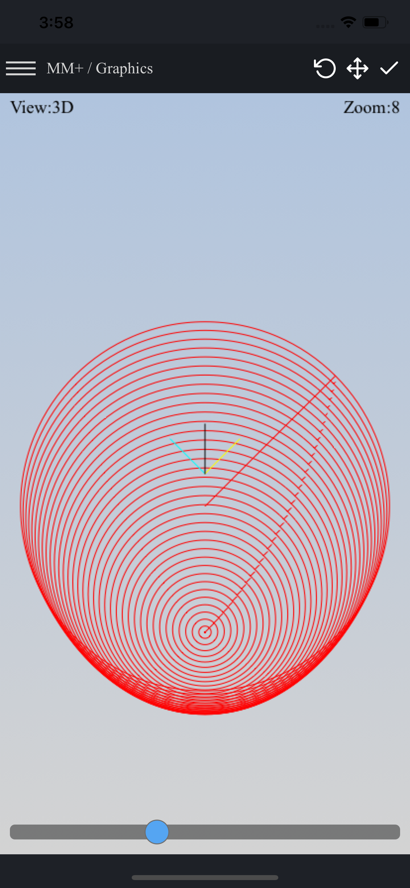

Informations:
- fast 3D (isometric) graphics module with tool rendering (50 tools to use)
- in-the-fly (while writing) and in-depth code validation (over 40 alerts and warnings) read more
- no blocking code execution (you can stop program execution in any time)
- compatible with Fanuc Custom Macro B and Fanuc-compatible controls (e.g. HAAS, SINUMERIK 802D, ISO) read more
- math functions supported: sin, cos, tan, asin, acos, atan, sqrt, abs, round, fix, fup, ln, exp, pow
- showing the assigned variables and colors the new assigned variables
- showing a parsing tree (great solution for debugging and learn CNC macros - parametric programming)
- running line-by-line (manually and auto-play mode)
- CNC simulator (a graphical representation of tool path) 3D, XY, XZ, YZ
- 23 examples of CNC programs and CNC macro programming
- FANUC / HAAS mode
- undo, format, copy, surround features
- full support G16 (polar coordinate), G51 (scaling), G52 (shift work offset), G68 (coordinate rotation), G65 / G66 (macro subprogram call), G98, G99, repeat canned cycle (L and K)
- supporting for Haas G70 Bolt Hole Circle, Haas G71 Bolt Hole Arc, Haas G72 Bolt Holes Along an Angle
- circular interpolation supported by using (I, J or R)
- supporting FANUC (4digits) and HAAS program title format (4-5digits)
- metric / imperial mode
- reading file with EOB ( ; ) / not or mix
- output syntax highlighting
- save / save as / open file / clear
- custom look (2 themes, font color)